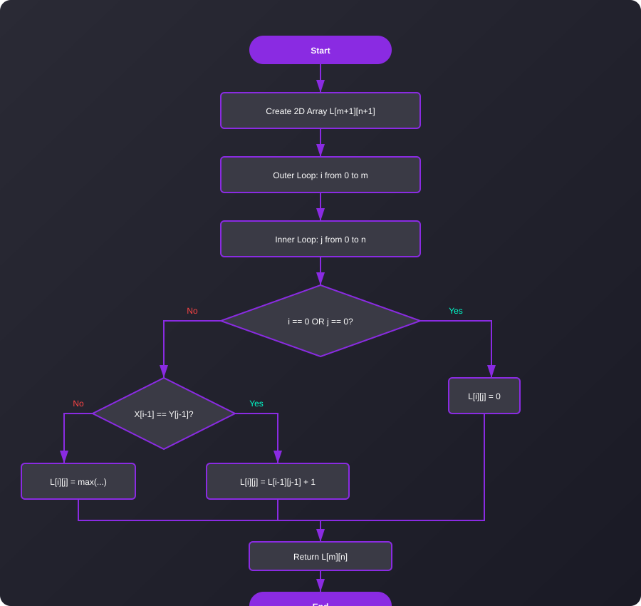

Longest Common Subsequence
Find the longest subsequence common to two sequences.
Time Complexity
O(m * n)
Space Complexity
O(m * n)
Find the longest subsequence common to two sequences.
The Longest Common Subsequence (LCS) problem is the problem of finding the longest subsequence common to all sequences in a set of sequences (often just two sequences). It differs from the longest common substring problem: unlike substrings, subsequences are not required to occupy consecutive positions within the original sequences.
It is a classic computer science problem, the basis of data comparison programs such as the `diff` utility, and has applications in computational linguistics and bioinformatics.
Create a 2D array dp[m+1][n+1] initialized to 0, where m and n are the lengths of the two strings.
Loop through each character of the first string (i) and the second string (j).
If the characters match (str1[i-1] == str2[j-1]), then dp[i][j] = dp[i-1][j-1] + 1.
If the characters do not match, take the maximum from the previous row or column: dp[i][j] = max(dp[i-1][j], dp[i][j-1]).
The answer is stored in dp[m][n].
A visual representation of the DP LCS algorithm.
